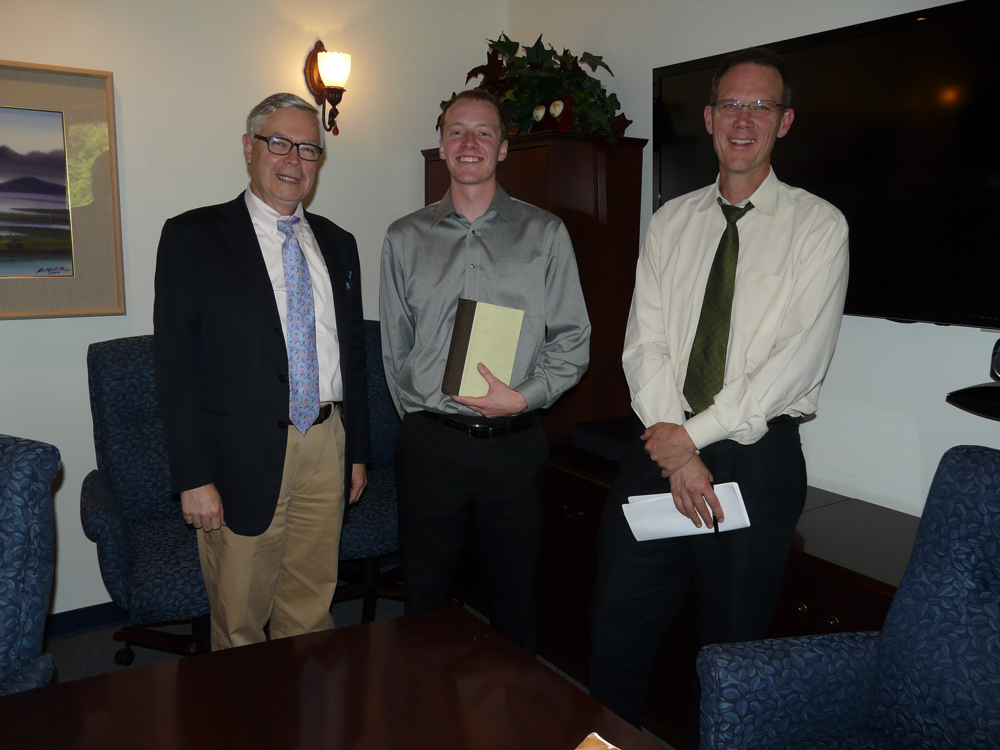

Daniel K. Campbell
- Videographer
- ~
- Copywriter
- ~
- Freelance Writer
- ~
- Content Creator
About Me
Master’s Thesis Defense: Pictured from left to right, Professor Charles Kesler, PHD Harvard, myself, and Professor Christopher Nadon, PHD University of Chicago.
Hi! Thanks for stopping by.
I’m a content creator with various interests and specialties. At the moment, I am most absorbed with copywriting, freelance writing, blogging and video production. I am currently copywriting for Spotzer. I have a master’s degree in politics from Claremont Graduate University and a B.A. from Pitzer College where I majored in government from Claremont Mckenna College. Don’t hesitate to reach out with any project or inquiry.
Call me anytime with an idea at 509.881.0721
Or if you prefer email correspondence: campbelldanielk@gmail.com